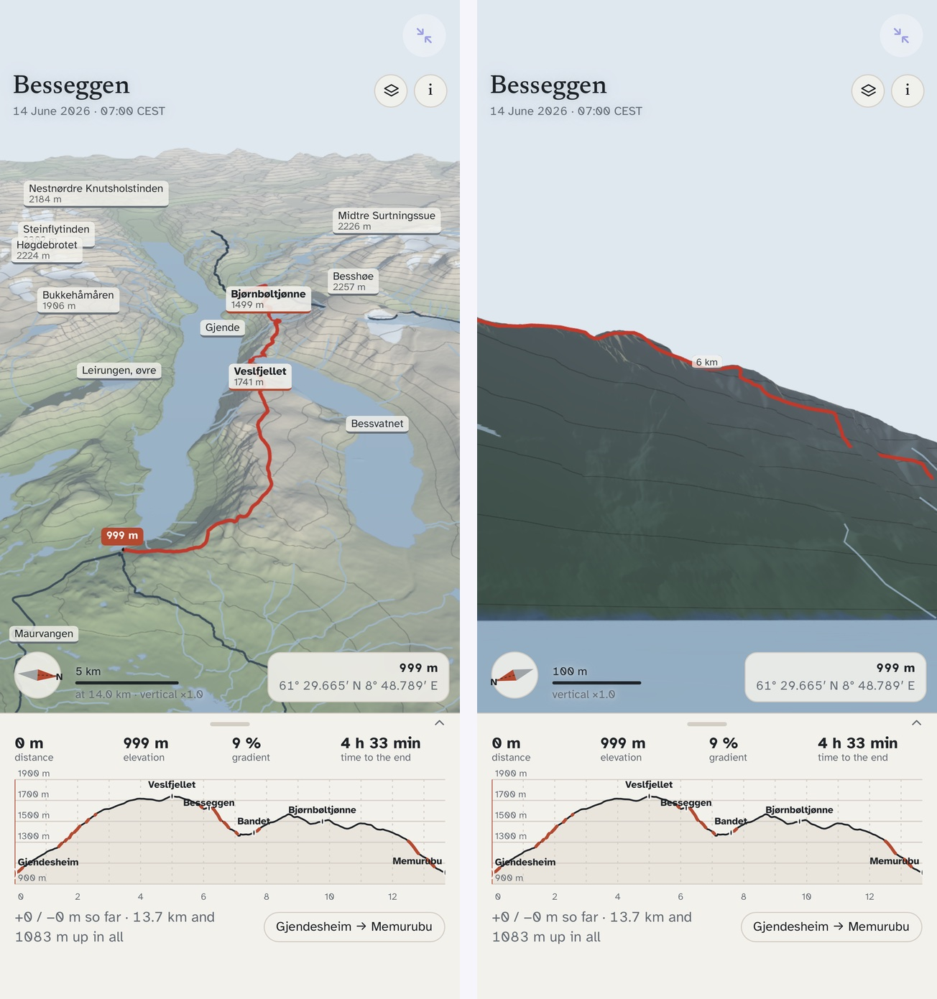

Besseggen: a 3D mountain from Kartverket's open terrain
One of the example apps. Built by asking an AI; runs offline in Snuggery.
Besseggen is the ridge in Jotunheimen that everyone in Norway has either walked or been told to walk: a narrow spine between two lakes at different heights, one green, one blue. I wanted it on my phone in three dimensions — the real terrain, the marked trail draped on it, the sun where it actually is on a June morning so the shadows fall the right way — and I wanted it to work with no signal, because on the ridge there is none.
The app is a folder of HTML and JavaScript. It was built by asking: a written brief, an AI workflow that fetched the data, wrote the pipeline and the app, reviewed its own work, and fixed what the review found. The brief said what the data was, what the app had to do, what it must never claim, and what a phone can render; the work took an afternoon. It runs inside Snuggery's sandbox, where a mini-app cannot reach the network, so every byte it needs travels inside its ZIP.
What is real in it
Everything on screen comes from four Kartverket datasets, retrieved on 22 September 2026 and credited in the app: the national 1-metre elevation model for the terrain, the trail database for the route, the N50 map data for the lakes, rivers and glaciers, and the central register of place names for the labels. The hillshade, the slope colouring, the elevation bands and the contours are all computed from the elevation data. Kartverket's own map tiles are not in it: nothing I could read in the licence said in terms that they may be cached for offline use, so the app draws its own map from the heights rather than ship a guess.
The sun is real too. Pick a day and a time and the app places the sun where it will be, casts the terrain's shadows, and can tell you the first and last sun on any point you tap — useful for the col, which sits in shadow long after the tops are lit. The walking-time profile along the bottom uses Tobler's hiking function, the standard model of walking speed against slope, and you can change its pace factor; the numbers are a planning aid, not a promise.
Two things it is not. It is not a navigation tool: no position fix, no compass, no live weather. Besseggen is exposed and the weather turns fast, and the app says so on its About panel. And the terrain is not photographic: it is heights, shaded, which is exactly why a 17 MB download works offline.
What it does
- Drag to turn, pinch to zoom, two fingers to pan; tap the ground to move the marker, and the elevation profile follows.
- Saved viewpoints — from the boat on Gjende, from Bandet, on top of Veslfjellet — and a first-person walk along the route at the app's own flying speed.
- Viewsheds and lines of sight: tap two points and it tells you whether one can be seen from the other, and which named peaks are visible from where you stand.
- Vertical exaggeration, if you want the ridge to look the way it feels.
- Focus mode: double-tap the view and the controls slide away, leaving the mountain the whole screen with a slim column of buttons at the side.

What the app corrected
The brief I wrote was wrong about the mountain, and the app put me right. It assumed that Bandet, the col at the foot of the ridge, is visible from the top of Veslfjellet. It is not: the Besseggen crest at 1,628 metres blocks the line from a 1,743-metre eye down to Bandet at 1,392 by 65 metres, and the app proved it three ways — its own terrain raster, its line-of-sight tool, and an independent march along the line. No point on the walk sees Bandet except Bandet. The eye-height slider exists for exactly this kind of question, and the answer is the kind of thing a map cannot tell you and the ridge can.
Sources: Kartverket — Nasjonal høydemodell DTM1 (NLOD 2.0 / CC BY 4.0), Turrutebasen, N50 Kartdata (CC BY 4.0), Sentralt stedsnavnregister (CC BY 4.0). three.js (MIT); Atkinson Hyperlegible and Newsreader (SIL OFL). The full text is in the app's About panel and in CREDITS.txt.
Open it in your browser · Get the ZIP for an iPhone with Snuggery · All the examples